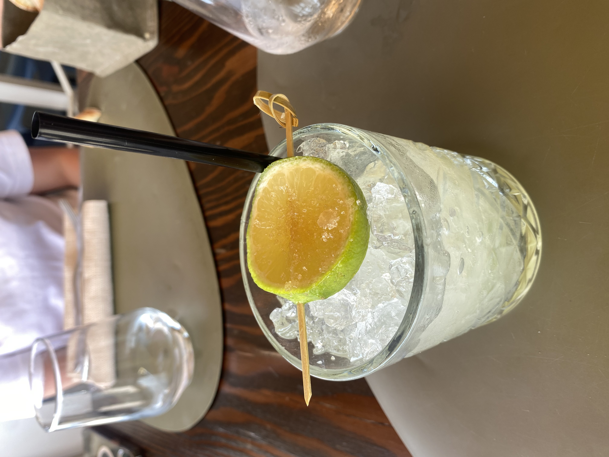
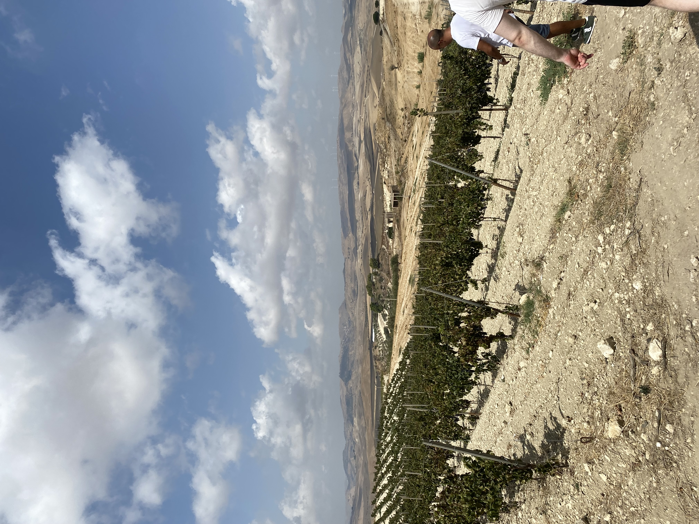
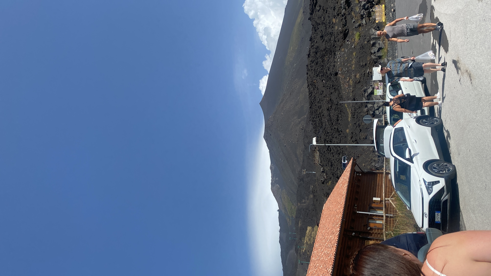
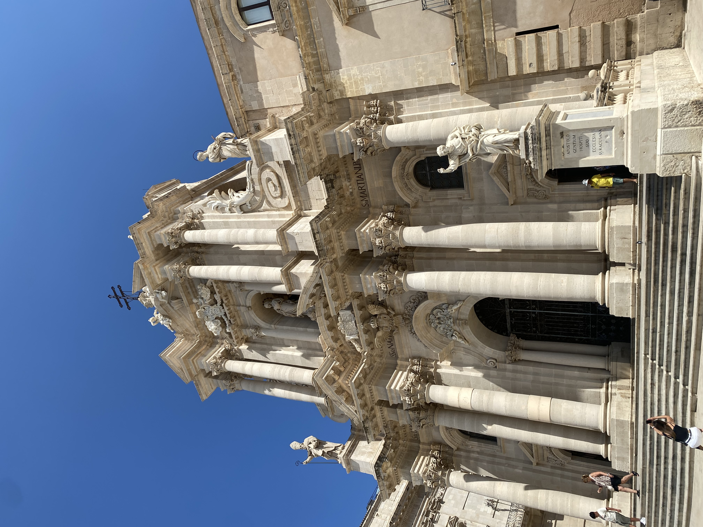
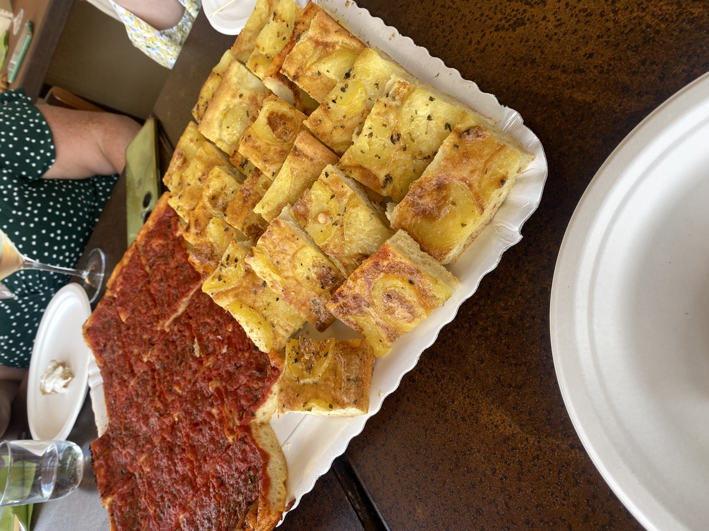

Ohessa näkyy kuvia Sisiliasta, joita olen ottanut. Kuvia on muun muassa ruoista ja maisemista.
Sisilia on Välimeren suurin saari, tunnettu kauniista rannoistaan, jyrkistä kallioistaan ja vehreistä vuoristaan. Euroopan korkein aktiivinen tulivuori Etna hallitsee saaren maisemaa. Sisämaa on täynnä kyliä, laaksoja ja viljelyksiä, ja historialliset antiikin temppelit sekä barokkikaupungit kuten Noto tekevät maisemasta ainutlaatuisen.


